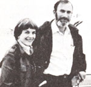
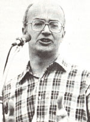

Paul Ehrlich (Bing Professor of Population Studies and Professor of Biological Sri ences. Stanford University) and Anne Ehrlich (Senior Research Associate, Department of Biological Sciences, Stanford) are familiar names to ecologists and environmentalists everywhere. As well they should be. Because it was Paul and Anne who-through their writing and research-gave special meaning to the words "population", "resources", and "environment" in the late 1960's. (They also coined the term coevolution, and did a lot to make ecology the household word it is today.) But while most folks are aware of the Ehrlichs' popular writing in the areas of ecology and overpopulation (most of us-for instancehave read Paul's book The Population Bomb) . . . far too few people have any idea of how deeply the Ehrlichs are involved in ecological research (research of the type that tends to be published only in technical journals and college textbooks.) That's why it pleases us to be able to present-on a regular basis-the following semi-technical column by authors/ecologists/educators Anne and Paul Ehrlich.
Conservationists across America were shocked, recently, to learn that Secretary of the Interior James Watt sees little reason to worry about preserving the land and resources of the United States for our descendants. As he explained to the Interior Committee of the House of Representatives, "I do not know how many future generations we can count on before the Lord returns."
James Watt is a brand-new kind of Interior Department head . . . a man who seems to believe that God has given him marching orders to turn over as much of our public land as possible to private exploitation. This calling, however, is not merely a result of his appointment. For four years before taking office, Watt was president of a gang of environmental rapists, centered in Denver, called the Mountain States Legal Foundation. In that role, he crusaded in favor of unregulated strip mining, and other policies that would contribute to the spread of overgrazing and air pollution.
Watt's viewpoint (one that's apparently shared by many other wealthy and powerful westerners) appears to be that God originally gave the lands of the United States to an assortment of large corporations . . . the Indians then stole that territory from big business . . . after which the federal government stole it from the Indians. The goal of Watt and other so-called "sagebrush rebels", then, is to return the land to its "rightful" owners.
BUREAUCRATIC EXPLOITATION
To anyone familiar with the present state of western lands, Watt's crusade would be funny if it weren't so dangerous. One must search in the mountain ranges of Nevada, for instance, to discover public domain that hasn't already been overgrazed. Worse yet, with the help of the antiquated mining law of 1872, companies are literally chopping down the mountains themselves. Everywhere the effects of the Forest Service's "Land of Many Abuses" policies are marring the environment.
When dedicated public servants have attempted to halt such plundering of public property, pressure from powerful economic interests has usually gotten those individuals transferred. In fact, long before Watt took over, the morale of the federal employees who would like to conserve something for future generations had begun to deteriorate, and more and more bureaucrats had started to cooperate with the exploiters.
Thus, at a time when the country needs a conservative Secretary of the Interior (an individual who controls nearly a million square miles of our country), it has, instead, an apparent radical who seems bent on destroying his public trust for private profit. Watt's push for more uncontrolled commercial development of public lands has already angered true conservatives throughout the West.
However, most ecologists are more than angry at Watt . . . they are actively afraid of him. They know that there is all too little time to reverse the tide of habitat destruction and extinction that threaten the survival of our society (see "The Snail Darter and Us" in MOTHER NO. 57, page 128, and "Extinction: It Should Concern Us All!" in No. 68, page 154). They've seen Watt stop the acquisition of new national parkland (when it's badly needed) and concentrate on "improving" existing parks (which seems to mean expanding their facilities for people, thus degrading their capacity to support other species). Ecologists have also watched him remove the conservationists from the U.S. delegation to the latest meeting of the Convention on International Trade in Endangered Species, while supporting policies that could force numerous species of parrots to extinction. In his television appearances, Watt gibbers on about how he's making all such changes "for the people". He's apparently utterly oblivious to the fact that his actions could threaten the lives of future generations.
REAGAN RADICALISM
Of course, one highly placed ecological ignoramus doesn't make an administration. Could it be that Ronald Reagan just listened to bad advice in appointing his Secretary of the Interior? If the Sierra Club gets millions of signatures on its "dump Watt" petition, is there any chance that the President will remove him and find a true conservative as a replacement?
Unfortunately, that scenario seems unlikely. Radicalism has been the theme of all of Reagan's environmental actions. The Council of Environmental Quality, the ecological conscience of the executive branch, has been gutted. Reagan appointed another Colorado antienvironmentalist, Anne Gorsuch, to head the Environmental Protection Agency. (John B. Oakes, former senior editor of the New York Tines, wrote that she has "no discernible qualifications for her highly technical post".)
Reagan also made Colorado cattleman Robert T. Buford chief of the Bureau of Land Management, which already permits extensive overgrazing of federal rangeland. A foe of stripmining regulations, Indianan James Harris, has become head of the Office of Surface Mining. And a former attorney for a timber company, John Crowell, got the nod as Assistant Secretary of Agriculture in charge of national forests!
Furthermore, both presidential counselor Edwin Meese (in April) and Vice President Bush (in June) have stated publicly that Watt is doing the President's bidding. And Reagan's exploitative attitude toward our natural heritage, which is that environmental quality is a luxury that must not stand in the way of economic progress, is shared by all too many politicians, business people, and plain citizens. Environmental controls, such individuals claim, have been a burden on business and must be relaxed so that a more "balanced" approach can be taken.
ENVIRONMENTAL ECONOMICS
Of course, there's no way that Reagan can truly claim to be choosing economics over ecology, even though he clearly doesn't know that. The world simply isn't made that way. The immediate costs of America's limited environmental regulations have been small . . . making a trivial contribution to inflation, for example. And if the accounting were done correctly-so that the calculations included the economic options preserved, the health costs avoided, and the lives saved-the regulations would doubtless prove to have been extremely profitable.
But the real costs of the Reagan-Watt radical environmental policy will be paid largely in the future, under different administrations. The basic question is what, if anything, can be done to keep those costs from becoming more than our descendants can pay.
The sad truth is that we have traded in a politically inept President who understood many of the world's problems for an extremely able politician who understands almost none of them. But President Reagan is no fool . . . so perhaps he can be educated. Under his charismatic leadership, this administration could create an environmental record that would bring the praises of future generations, rather than their curses.
If Reagan shows no sign of learning, however, environmentalists must organize against him politically . . . and soon! The fate of our nation cannot then be left in his hands, no matter how well-meaning he may be.
The reasons that the initiation of ecologically sound land stewardship policies is essential now are detailed in Extinction: The Causes and Consequences of the Disappearance of Species by Paul and Anne Ehrlich (Random House, 1981, $15.95). Watt's quote is from the Wall Street Journal (May 5, 1981). "Reagan environmentalism", John Oakes's excellent column, appeared in the New York Times (May 1, 1981).
|
 |
 |
|